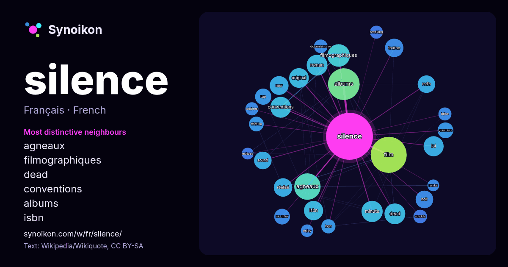

Français · liste des mots du jour
silence
“silence” · Les mots trouvés autour de lui dans 1361 occurrences issues de Wikipédia, Wikiquote.

Voisins les plus spécifiques
- agneaux 46×
- filmographiques 34×
- dead 28×
- conventions 28×
- albums 28×
- isbn 25×
- original 21×
- film 21×
- sound 20×
- tourne 19×
- minute 19×
- tue 17×
- guerriers 16×
- modifier 16×
- roman 14×
- noir 13×
- téléfilm 13×
- radio 13×
- logo 13×
- mer 13×
× = combien de fois plus souvent que dans le texte général de Wikipédia.
Voisins les plus fréquents
- film 84
- albums 65
- agneaux 45
- grand 42
- filmographiques 33
- minute 29
- conventions 28
- dead 28
- roman 28
- mort 27
- loi 26
- original 25
- isbn 24
- prix 24
- mer 23
- enfants 22
- réalisé 22
- tourne 22
- noir 20
- radio 20
En contexte
- Pour les articles homonymes, voir Silence (homonymie). Le silence est, dans son sens originel, l'état de la personne qui s'abstient de parler. Dans son Wikipedia snippets · Silence
- Un silence Pour plus de détails, voir Fiche technique et Distribution. Un silence est un film dramatique film franco-belgo-luxembourgeois réalisé par Joachim Wikipedia snippets · Un silence
- Pour les articles homonymes, voir Le Silence de la mer (homonymie). Le Silence de la mer est une nouvelle de Vercors, publiée clandestinement aux Éditions Wikipedia snippets · Le Silence de la mer
- Pour les articles homonymes, voir Silence (homonymie). En musique, un silence est un moment pendant lequel n'est émis aucun son, il correspond à une pause Wikipedia snippets · Silence (musique)
- Pour les articles homonymes, voir Minute de silence (homonymie). Une minute de silence conforme au rite initial est un arrêt collectif de deux minutes Wikipedia snippets · Minute de silence
- supérieur à B, plus le silence est grand et le taux de rappel est faible. Sur une même requête, on peut rencontrer du bruit et du silence. Des documents intéressants Wikipedia snippets · Bruit et silence
- homonymes, voir Sound of Silence. The Sound of Silence Singles de Simon et Garfunkel The Sound of Silence (initialement The Sounds of Silence) est une chanson Wikipedia snippets · The Sound of Silence
- documentaire Silence dont les premiers extraits sont diffusés fin 2017. Adam Ondra publie la vidéo de son ascension à travers le film documentaire Silence le 23 Wikipedia snippets · Silence (escalade)
Autres mots
- art
- automne
- carte
- chanson
- chat
- chemin
- cheval
- chien
- climat
- cloche
- cœur
- dieu
- désert
- eau
- famille
- forêt
- histoire
- hiver
- horloge
- jardin
- langue
- miel
- miroir
- monnaie
- montagne
- mort
- mère
- nature
- nourriture
- ombre
- pain
- pluie
- pont
- pouvoir
- printemps
- santé
- science
- sel
- temps
- tempête
- thé
- train
- travail
- trésor
- vie
- ville
- vérité
- étoile
- île
Précalculé le 2026-10-09 avec les paramètres par défaut (±5 mots, corpus moyen). La carte interactive peut l’actualiser avec des données en direct.
Interface traduite automatiquement ; corrections bienvenues.